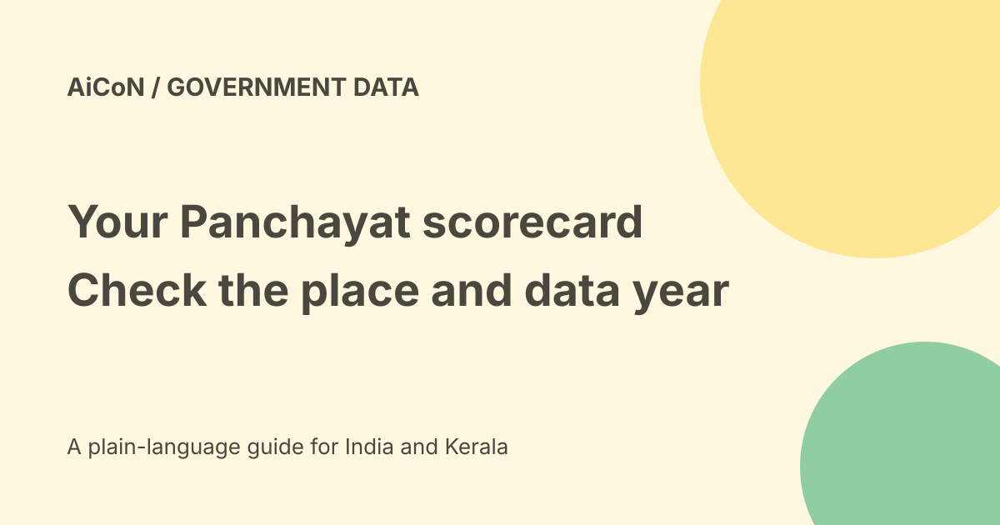

Panchayat scorecard: check PAI year, themes and local data
The Panchayat Advancement Index, or PAI, is a Ministry of Panchayati Raj assessment framework for Gram Panchayat development. The official scorecard currently offers 2023-2024 and 2022-2023 assessment years. A historical score is not a live measure of every local service today.

What PAI measures
MyGov describes an assessment of progress and performance across development themes. It is intended to improve awareness, transparency and informed participation.
A scorecard can help residents ask better questions about local development. It is not a personal eligibility certificate or a guarantee that a particular road, water supply or benefit is working today.
The nine themes
- Poverty-free and enhanced livelihoods.
- Health.
- Child-friendly development.
- Water sufficiency.
- Clean and green development.
- Self-sufficient infrastructure.
- Social justice and social security.
- Good governance.
- Women-friendly development.
Read the relevant theme as well as any overall score. Two Panchayats can have similar totals and very different strengths or gaps.
Open the official scorecard
Use the PAI portal linked by the Ministry's MyGov page. The public Gram Panchayat scorecard page shows selectors for assessment year, State/UT, District, Block, Panchayat, Theme and Field Office.
Kerala appears in the state list. These are Gram Panchayat records; do not choose a similarly named place or assume the same scorecard applies to a municipality.
Step-by-step lookup
- Open the official PAI scorecard source below.
- Choose the assessment year you want to read.
- Select Kerala or the relevant State/UT.
- Select the correct district and block as the options load.
- Choose the exact Gram Panchayat.
- Use the available theme or field-office choices if required.
- Read the displayed year and location before using the result.
- Compare themes and keep the source with any note you share.
The public form was inspected through published page content. No particular Panchayat's score was retrieved or verified for this guide. Follow the current controls rather than assuming every selection behaves identically.
Check the assessment year
The page labels PAI 2.0 as 2023-2024 and also offers 2022-2023. The date you open the website is not the date of the measured data.
Before making a comparison, use the same assessment year and read the framework's context. A changed score can reflect reporting, coverage or methodology as well as development.
If your Panchayat is missing
Recheck state, district, block and spelling. A blank selector or unavailable record is not proof of a zero score or failure.
Try the official portal again when the page is working and ask the relevant Panchayat or official support for the published record. Do not substitute an unofficial ranking and describe it as government data.
MyGov activity is separate
The official activity runs from 10 September 2026 to 10 October 2026 at 23:59 IST. It invites citizens to view their Panchayat's performance and become informed about development.
That activity deadline is not a stated expiry date for the PAI scorecard itself. Account or submission requirements for participating on MyGov are separate from reading the public scorecard. No participation was submitted here.
Cost, login and privacy
The public scorecard and MyGov explanation were readable without a payment or signed-in account. No viewing tariff is shown in the checked material. Data charges are separate.
You do not need to give a private ranking site your Aadhaar, OTP or payment details to read this public government page. Do not publish another resident's private complaint alongside a score.
Use the result constructively
Keep the location, assessment year and theme with a quoted number. Ask which indicator needs improvement and what current work addresses it.
A score is not evidence of corruption or a judgement about every person working in the Panchayat. Compare it with current official plans and verified local information.
What changed since the original post?
We explain the actual selectors, historical assessment years and the separate MyGov deadline. We avoid saying every Panchayat record is necessarily available or that viewing a score completes participation.
Frequently asked questions
Is the score a live 2026 reading?
The current selector offers assessment years 2023-2024 and 2022-2023.
Does the MyGov deadline close the scorecard?
No such closure is stated in the checked sources.
Was a specific score checked?
No.
Sources: Official PAI public scorecard · Official MyGov activity. Checked 7 October 2026.